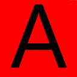
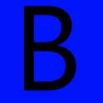
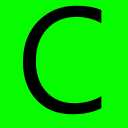

Z lewej strony zostanie utworzone menu pionowe składające się z trzech gotowych ikon (wcześniej przygotowanych w postaci plików graficznych).
Najechanie na każdą z ikon kursorem myszy ma spowodować zmianę jej wyglądu.
Odsunięcie kursora ma skutkować przywróceniem poprzedniego wyglądu ikony.
Kliknięcie pierwszej ikony spowoduje przeniesienie do strony www.men.gov.pl, drugiej - do strony www.cke.edu.pl, a trzeciej do strony http://zsee.szczenin.pl .



W swojej pracy wykorzystaj skrypty języka JavaScript.